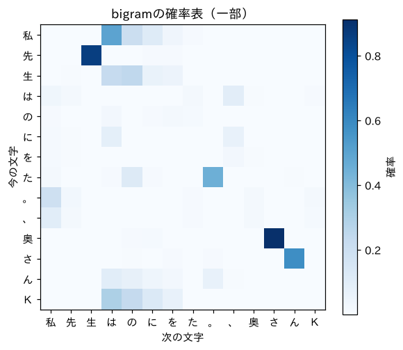

第2部 ゼロから作る · 第6章
数の表を一気に扱う：テンソル
for文を卒業して、420万マスの表を一瞬で計算する
おすすめは「ページを読みながら、コードを自分のノートブックに1セルずつ貼って実行」。完成ノートは困ったときの答え合わせ用です。
つくるもの
bigramモデルを「確率の表（行列）」として作り直し、損失計算を一瞬で終わらせる
ついでに身につく理論
- ベクトル・行列・テンソルと「形（shape）」
- 行ごとの合計とブロードキャスト
- one-hotベクトルと行列の掛け算（＝表の行を取り出す）
- 行列の積の形のルール
- なぜGPUは速いのか（並列計算）
新しく使うPython
torch.tensor/torch.zeros.shapeと.dtype- インデックスとスライス（
N[i, j]、N[:, j]） sum(dim=…, keepdim=True)@（行列の掛け算）timeで計測

ミナト
テンソルって、名前がもう強そうです。

ボンゴ先生
名前はね。でも中身は「数を並べた箱」だ。1列に並べたらベクトル、表にしたら行列、それを何枚も重ねたら3次元のテンソル。HTMLの <table> が書けるキミなら、もう半分わかっている。
準備
いつもの準備セルです（第5章と同じ）。今回は torch も使います。
import re, math, time, urllib.request
from collections import Counter
import torch
def load_soseki(file_id="773_ruby_5968"):
url = ("https://raw.githubusercontent.com/aozorahack/aozorabunko_text/master/"
f"cards/000148/files/{file_id}/{file_id}.txt")
text = urllib.request.urlopen(url).read().decode("cp932")
text = text.split("-------------------------------------------------------")[2]
text = text.split("底本：")[0]
text = re.sub(r"《.*?》", "", text)
text = re.sub(r"※?［＃.*?］", "", text)
text = text.replace("｜", "").replace("\r\n", "\n")
text = re.sub(r"\n{3,}", "\n\n", text)
return text.strip()
text = load_soseki()
chars = sorted(set(text))
V = len(chars)
stoi = {ch: i for i, ch in enumerate(chars)}
itos = {i: ch for ch, i in stoi.items()}
print("語彙の数：", V)語彙の数： 2061テンソル入門：数を並べた箱
テンソルを作ってみましょう。
a = torch.tensor([1.0, 2.0, 3.0])
b = torch.tensor([10.0, 20.0, 30.0])
print(a + b)
print(a * b)
print(a * 2)
print(a.sum())tensor([11., 22., 33.])
tensor([10., 40., 90.])
tensor([2., 4., 6.])
tensor(6.)ポイントは、for文を書いていないのに、全部の要素がいっぺんに計算されていることです。a + b は「同じ位置どうしを足す」、a * 2 は「全部を2倍」。リストでやろうとすると、for文が必要でしたね。
次は2次元、つまり表です。
M = torch.tensor([[1, 2, 3],
[4, 5, 6]])
print(M.shape)
print(M[0]) # 0行目
print(M[:, 1]) # 1列目（全部の行の、1番目）
print(M[1, 2]) # 1行目の2列目torch.Size([2, 3])
tensor([1, 2, 3])
tensor([2, 5])
tensor(6)bigramの表を作る
いよいよ本題です。第4章の「今の文字（行）×次の文字（列）」の表を、2061×2061の行列として作ります。
n = int(len(text) * 0.9)
train_text, val_text = text[:n], text[n:]
pairs = Counter(zip(train_text, train_text[1:]))
N = torch.zeros((V, V))
for (a, b), count in pairs.items():
N[stoi[a], stoi[b]] = count
print(N.shape)
print("「先」→「生」の回数：", N[stoi["先"], stoi["生"]].item())
print("表のマスの数：", N.numel(), " うち0でないマス：", (N > 0).sum().item())torch.Size([2061, 2061])
「先」→「生」の回数： 597.0
表のマスの数： 4247721 うち0でないマス： 20395約420万マスのうち、0でないのは約2万マス（0.5%以下）。第4章で話した「スパース（まばら）」が、数字で見えました。
回数を確率に変える：行ごとの合計とブロードキャスト
回数を確率にするには、各行を「その行の合計」で割ればよいのでした。スムージングの k も足しておきます。
k = 0.01
row_sums = (N + k).sum(dim=1, keepdim=True)
print(row_sums.shape)
P = (N + k) / row_sums
print(P.shape)
print("各行の合計（最初の5行）：", P.sum(dim=1)[:5])torch.Size([2061, 1])
torch.Size([2061, 2061])
各行の合計（最初の5行）： tensor([1.0000, 1.0000, 1.0000, 1.0000, 1.0000])損失を一瞬で計算する
第5章では、for文で1文字ずつ損失を計算しました。テンソルなら、こうなります。
val_ids = torch.tensor([stoi[c] for c in val_text])
xs, ys = val_ids[:-1], val_ids[1:]
start = time.time()
probs = P[xs, ys]
loss = -probs.log().mean()
print(f"検証データの損失：{loss.item():.3f}（{time.time() - start:.4f}秒）")検証データの損失：3.581（0.0012秒）第5章と同じ 3.581 です。P[xs, ys] は「xs の各文字の行の、ys の各文字の列」をいっぺんに取り出す書き方（高度なインデックス）で、16,246個の確率が一度に手に入ります。.log() で全部の対数をとり、.mean() で平均。3行で損失が出ました。
ボンゴ先生
同じことをfor文でやると、パソコンにもよるが100倍くらい時間がかかる。テンソルの計算は、中身がC言語などで書かれた高速なプログラムで、しかもまとめて処理されるからだ。「Pythonでfor文を書いたら負け」という格言が、機械学習の世界にはある。……まあ、第4章で散々書いたけどね。
表を眺める
表の一部を、色の濃さで描いてみましょう。
!pip install -q matplotlib-fontjaimport matplotlib.pyplot as plt
import matplotlib_fontja
look = ["私", "先", "生", "は", "の", "に", "を", "た", "。", "、", "奥", "さ", "ん", "Ｋ"]
idx = [stoi[c] for c in look]
sub = P[idx][:, idx]
plt.figure(figsize=(6, 5))
plt.imshow(sub, cmap="Blues")
plt.xticks(range(len(look)), look)
plt.yticks(range(len(look)), look)
plt.xlabel("次の文字")
plt.ylabel("今の文字")
plt.colorbar(label="確率")
plt.title("bigramの確率表（一部）")
plt.show()
「先→生」「奥→さ」「さ→ん」（奥さん！）が濃く光っています。この表こそが、bigramモデルの「頭の中」のすべてです。
表から文章を作る
テンソル版の生成も作っておきましょう。torch.multinomial は、第3章で自作したくじ引きのテンソル版です。
g = torch.Generator().manual_seed(0)
ix = stoi["私"]
out = ["私"]
for _ in range(60):
ix = torch.multinomial(P[ix], num_samples=1, generator=g).item()
out.append(itos[ix])
print("".join(out))私は段加減です。そう渇様子先生といと私はた。しまで。私は一種を極ったがら見える資刹郵濯耐皇奪焼肩煎諺者櫓剛示樹息貪橋の男で（出てくる文章は、乱数の種 manual_seed(0) の数字を変えると変わります。）
ミナト
途中で「資刹郵濯耐皇奪…」って、読めない漢字が延々と続いてますけど……。
ボンゴ先生
いいところに気づいた！ これはスムージングの副作用だ。珍しい文字の行は、数えた回数の合計がとても少ない。そこに全部の文字へ0.01ずつ、合計 回分の「おまけ」を足すと、おまけのほうが本物の回数より多くなってしまう。するとその行は、ほとんど「でたらめ」になる。一度珍しい文字に迷い込むと、次も珍しい文字、その次も……と抜け出せなくなるんだ。数えるだけのモデルの、もう1つの限界だね。
one-hotと行列の掛け算
最後に、次の章から何度も出てくる大事な計算を1つ。行列の掛け算です。
文字「私」を、「私」の位置だけ1で、残りが全部0の長さ2061のベクトルで表すことにします。これを one-hot（ワンホット、1か所だけ熱い）ベクトルと言います。
import torch.nn.functional as F
x = F.one_hot(torch.tensor(stoi["私"]), num_classes=V).float()
print(x.shape, x.sum())
row = x @ P # one-hot × 確率表
print(row.shape)
print(torch.allclose(row, P[stoi["私"]]))torch.Size([2061]) tensor(1.)
torch.Size([2061])
True@ は行列の掛け算の記号です。one-hotベクトルに表を掛けると、表の「私」の行がそのまま取り出されることが確かめられました（allclose は「ほぼ等しい？」を調べる関数）。
GPUは何が速いのか
もっと深くNumPyとの関係
Pythonで数の表を扱う道具としては、NumPy（ナムパイ）も有名です。numpy.array はテンソルとほぼ同じ使い心地で、データ分析ではNumPyが主役です。PyTorchのテンソルはNumPyの配列に「GPUで動く」「微分を自動で計算できる（次の章）」機能を足したもの、と考えてOKです。t.numpy() と torch.from_numpy(a) で行き来できます。
クイズ 1：形の計算
形が [32, 2061] のテンソルと [2061, 64] のテンソルを @ で掛けると、結果の形は？
答えを見る（まず自分で考えてから！）
[32, 64] です。真ん中の2061が一致しているので掛けられ、外側の32と64が残ります。
クイズ 2：keepdim
N.sum(dim=1, keepdim=True) の形は [2061, 1] でした。N.sum(dim=0) の形は？ 何を表す？
答えを見る（まず自分で考えてから！）
[2061] です。各列の合計、つまり「その文字が『次の文字』として何回出てきたか」を表します。
できたらチェック
ボンゴ先生
表の中身を「数える」のではなく「学習で決める」。そのためには、中身を少し変えたら損失がどう変わるかを知る必要がある。それを教えてくれるのが微分だ。次の章は、坂道を転がるボールの話から始めよう。物理屋の血が騒ぐね。
押すと目次にチェックが付きます（この端末のブラウザにだけ保存）。